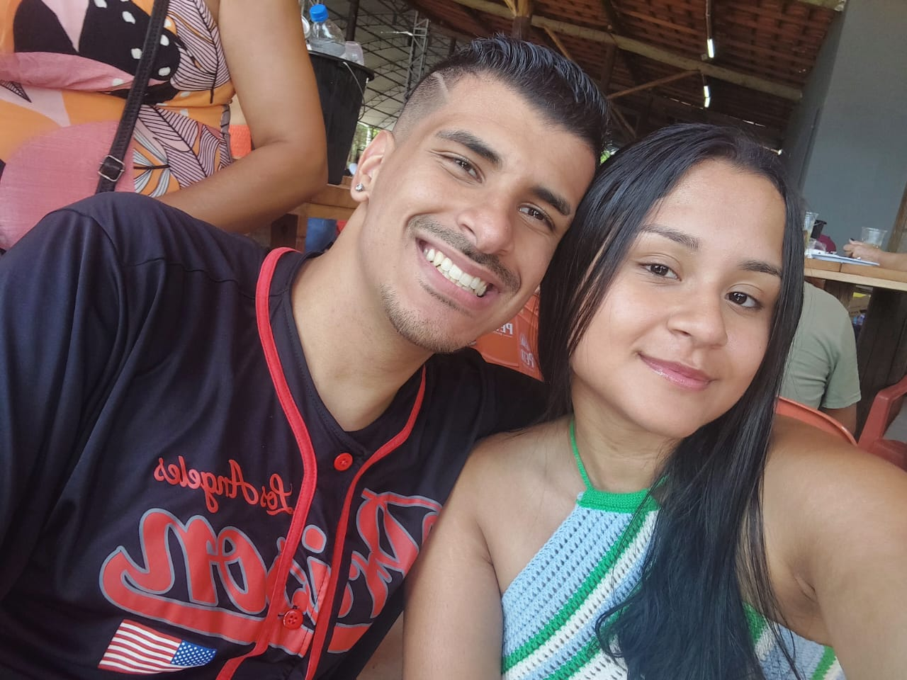
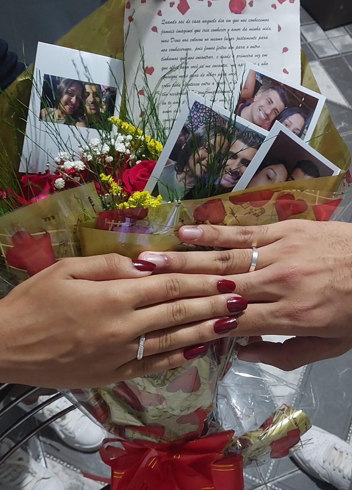
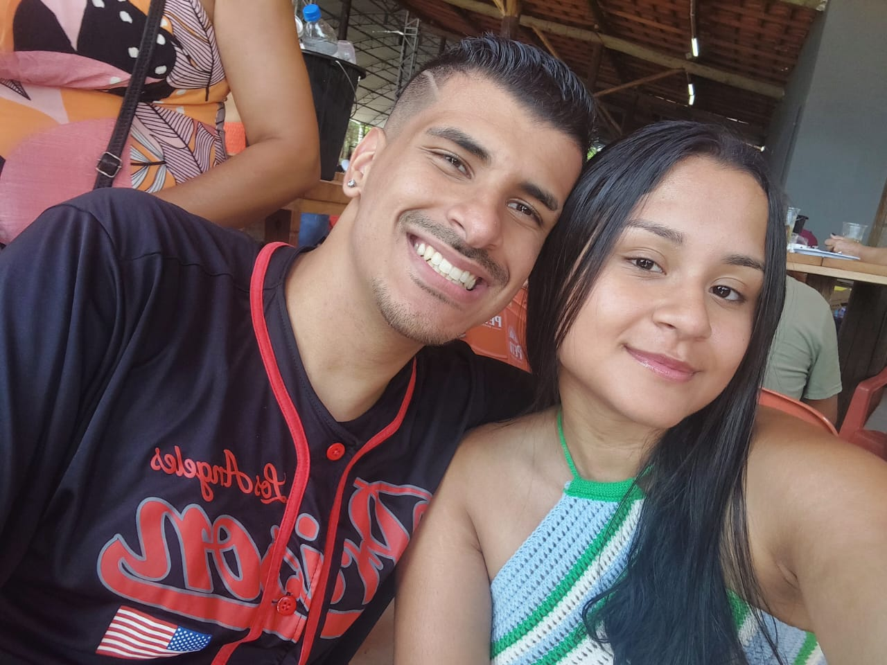
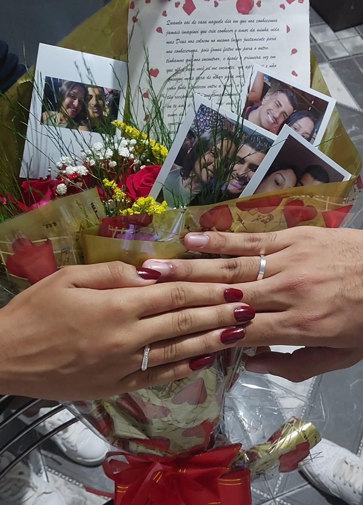

Olá meu amor,
Essa página é para você, espero que goste!
Queria fazer algo especial e diferente para você sempre se lembrar do quanto eu te amo.
Meu amor você é a melhor coisa que aconteceu na minha vida, desde que você entrou na minha vida tudo melhorou, você trouxe luz pra minha vida, trouxe cor, todos os dias você me traz paz, felicidade, alegria, você me faz sorrir nos dias mais dificeis, conversar com você é a melhor coisa do meu dia, melhor parte do meu dia, estar com você é a melhor coisa da minha vida meu amor, e eu passo a semana toda morrendo de saudades de você e contando cada segundo para estarmos juntos, você é meu mundo, você é tudo para mim meu amor, você melhora os meus dias, melhora a minha vida, você é o meu porto seguro, palavras são insulficientes para expressar o quanto eu te amo meu amor, o amor que eu sinto por você é surreal, é inexplícavel. Todos os dias eu agradeço a Deus por ter nos colocado na vida um do outro, agradeço por ter você, meu bem mais precioso, meu maior tesouro, eu sou o homem mais sortudo desse mundo, pra mim a maior riqueza que possa ter é e sempre será você meu amor, obrigado por tudo que você já fez e faz por mim, por nós, por sempre estar ao meu lado, assim como eu estou e sempre estarei com você para tudo meu amor, sempre estarei ao seu lado, somos um só meu amor, você é minha alma gemea, minha outra metade, pra sempre vai ser nós dois meu amor, todos os dias irei fazer de tudo por você, por nós meu amor, pelo nosso relacionamento, farei sempre o possivel e o impossivel para te fazer se sentir a mulher mais feliz e amada desse mundo, você me ensinou oque é o amor verdadeiro, eu amo esse sentimento, amo como tudo é e sempre foi entre a gente, amo nosso relacionamento, EU TE AMO PRA TODO SEMPRE MEU AMOR, EU TE AMO COM TODA A MINHA ALMA, VOCÊ É A MULHER DA MINHA VIDA, MINHA FUTURA ESPOSA, EU TE AMO MEU AMOR ❤❤❤❤❤❤❤❤❤❤❤❤